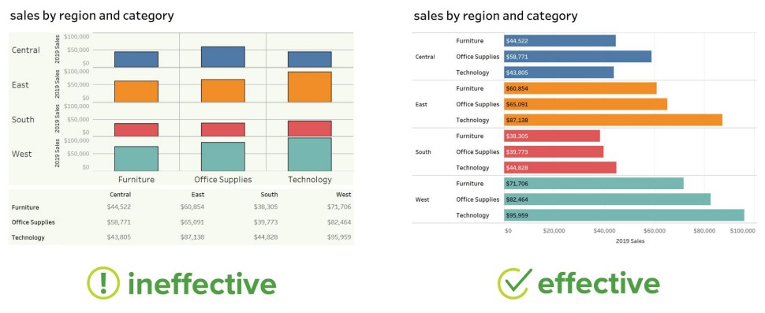
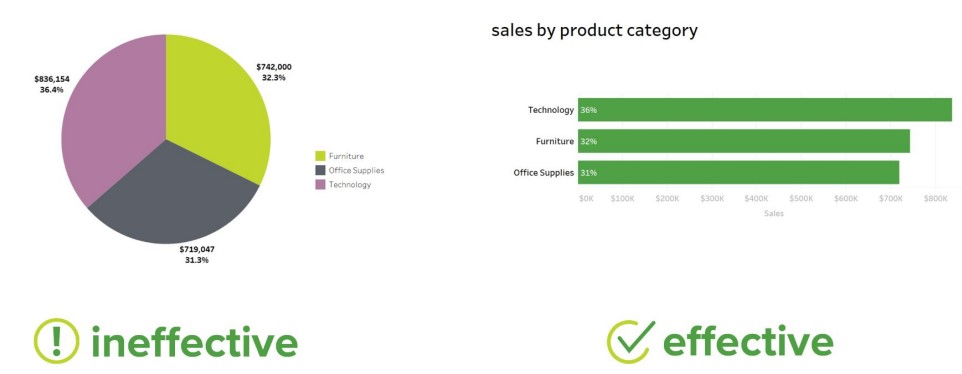
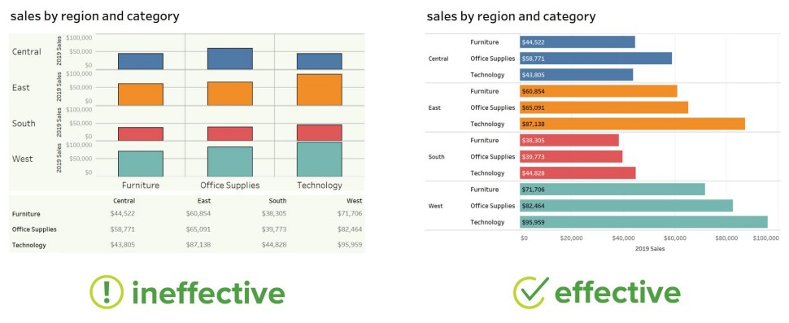
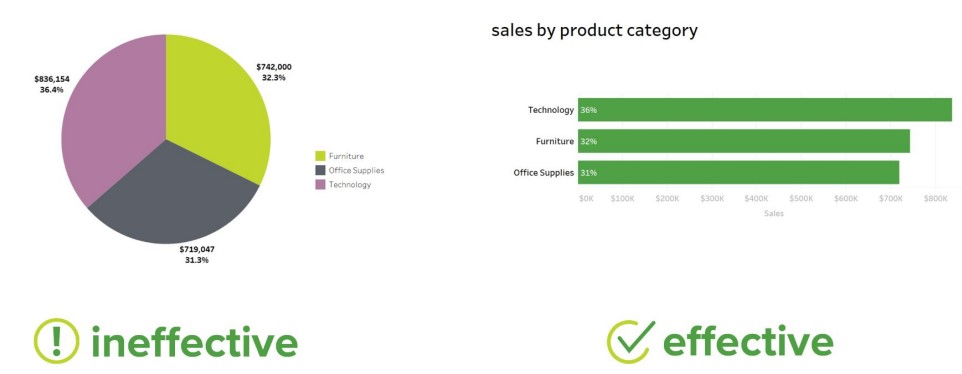
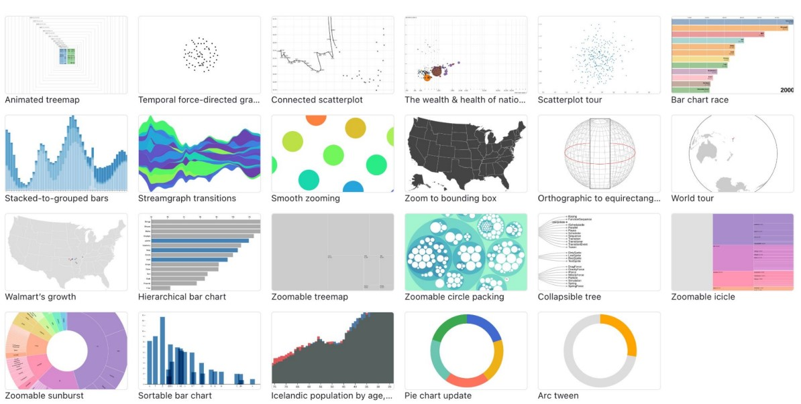
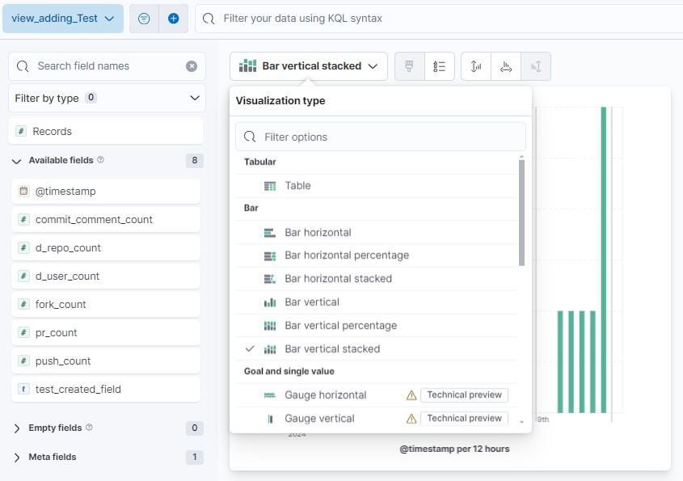
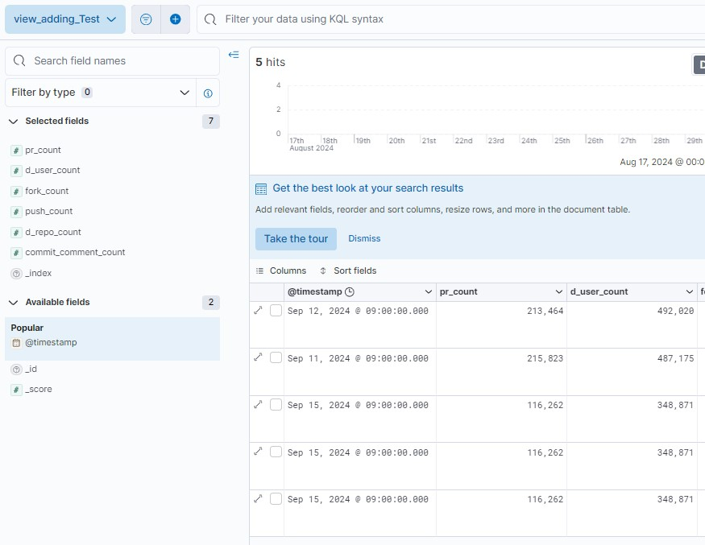
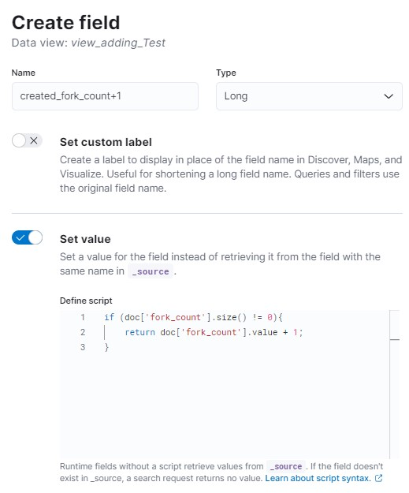
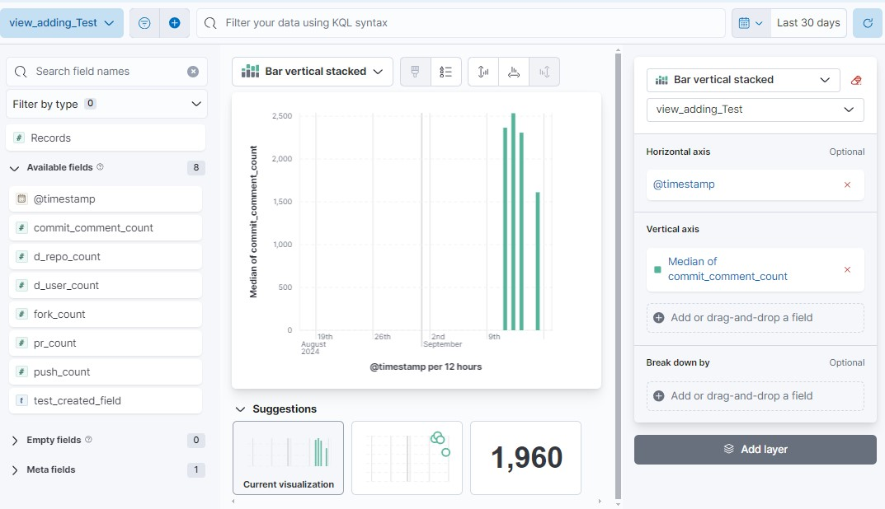

데이터 엔지니어링 스터디 내용정리 - Kibana
개요
- 참여중인 데이터 엔지니어링 스터디에서 배우는 내용 정리
- 데이터 수집, 정제 : pyspark, airflow
- 저장 : elasticsearch
- 시각화 : kibana
5주차 과제리뷰
Airflow
- Dag작성 샘플
- spark-submit.sh 스크립트 파일을 Bash operator로 사용
- gharchive의 변동 등으로 인한 사항을 적용 후 직접돌리기 위해 catchup=False
from airflow import DAG from airflow.operators.bash_operator import BashOperator from datetime import datetime, timedelta default_args = { "owner": "airflow", "depends_on_past": False, "start_date": datetime(2024, 6, 26), "retries": 1, "retry_delay": timedelta(minutes=2), # "on_failure_callback": , } dag = DAG("github-archive-pipeline", default_args=default_args, max_active_runs=1, schedule_interval="30 0 * * *", catchup=False, tags=['data']) dt = (datetime.now() - timedelta(days=1)).strftime('%Y-%m-%d') download_data = BashOperator( task_id='download-data', bash_command=f"/opt/airflow/jobs/download-data.sh {dt} ", dag=dag ) filename = '/opt/airflow/jobs/main.py' filter_data = BashOperator( task_id='filter-data', bash_command=f'/opt/airflow/jobs/spark-submit.sh {filename} ', dag=dag ) download_data >> filter_data
6주차 수업정리
Kibana
- Data Visualization
- 데이터에 따라 적합한 시각화가 다름  
- 데이터에 따라 적합한 시각화가 다름  
- 다양한 시각화 툴
- Tableau
- 유료 툴. ai 등 여러기능이 있으며 무거움
- 교육 등이 활성화되어 있음
- HighCharts
- 가볍게 1회성으로 작성시 활용가능
- Power BI
- Tableau와 사용성이 비슷한 Windows툴
- Google Chart
- 온라인으로 사용가능한 기본차트 제공
- D3.js, Chart.js
- 자유도가 높은 라이브러리 (Javascript library)
- Javascript이므로 웹에서 데이터 렌더링할 때 사용
- 실시간반영가능, Interactivity 
- Grafana
- 보통 클라우드의 모니터링을 위해 많이 사용
- 서버 모니터링에 특화(Conetivity 등)
- Kibana
- ES에 데이터를 전송하면, Kibana에 자동반영
- ES에 데이터를 전송하면, Kibana에 자동반영
- Tableau
- Kibana 장단점
- 장점
- Elasticsearch 시스템 모니터링, 검색 성능 평가에 탁월
- ES와 세트로 만들어져있으며, 별도의 import등이 필요 없음
- 다양한 visualization 생성, 인사이트 발굴 가능
- 데이터 검색/탐색 + (데이터 쌓이는 것)모니터링 + 분석을 하나의 UI 에서 진행
- visualization의 다양성과 interactivity 가 떨어짐
- Elasticsearch 시스템 모니터링, 검색 성능 평가에 탁월
- 단점
- Elasticsearch 특화
- plugin 설치가 번거로움
- 잦은 Elasticsearch 버젼업에 따라가기 버거움
- 항상 ES와 Kibana의 버전을 같이 써야함
- 항상 ES와 Kibana의 버전을 같이 써야함
- 장점
- Kibana 기타
- Observability
- Security
- Discover
- Management - Index Patterns, Saved Object생성, Dev tool 등
- Kibana 세팅
services:
kibana:
image: docker.elastic.co/kibana/kibana:8.4.3 # ES와 버전 맞추기
networks:
- default-network
environment:
- SERVERNAME=kibana
- ELASTICSEARCH_HOSTS=http://es:9200
- ELASTICSEARCH_USERNAME=kibana
- ELASTICSEARCH_PASSWORD=password
ports:
- 5601:5601 # 로컬포트:컨테이너포트
depends_on:
- es- Kibana Manual install
- https://www.elastic.co/guide/en/kibana/current/install.html
Kibana 사용실습(Discover, Visualize Library, Dashboard)
- Discover
- 기본화면
- 좌측상단 Create data view
- Name : 원하는 이름 지정
- Index pattern : 사용할 index. daily-stats-*과 같이 와일드카드 가능
- Timestamp : @timestamp를 기본으로 쓰나 다른 필드로 변경할 수 있다
- 좌측상단 Add filter (
+버튼)- +버튼을 눌러 UI로 필터링 가능
- 좌측 Selected/Available fields
- Selected로 필드추가하여 테이블 형태로 볼 수 있다
- 상단 Visualization type
- 그래프 타입 선택 가능 
- 상단 Documents
- 그래프 막대를 클릭하여 해당일자만 조회 가능 
- 좌측상단 Create data view
- Create field
- 타 필드에서 산출가능하다면 데이터를 최소로 저장하고 필드추가(Script Field생성)하는 방법이 있음
- 좌측상단 Create field
- Name지정 및 아래와 같이 script로 계산가능
if (doc['fork_count'].size() != 0){ return doc['fork_count'].value + 1; }
class_w6-5.jpg
- Discover에서 값을 확인하다가, 필드클릭 후 Visualize로 이동하여 보는 경우 많음
- 기본화면
- Visualize Library
- 종류
- Lens : 그래프 등 기본 시각화
- Maps : 지도 위에 시각화
- TSVB : TSVB로 들어간 series data를 위한 기능
- Custom visualization : Script로 시각화
- Lens 실습
- Create - Lens로 진입한 후 좌측상단에서 view를 선택.
- 추천하는 시각화로 표현되어 있음
- 하단의 Suggestions의 시각화이며, 교체도 가능
- 우측에서 대상 필드 및 Median, Average등 가능 
- 종류
- KQL 샘플
Filter ratio example
count(kql='response.status_code > 400') / count()Week over week example (previous week :
shift='1w')- 서로 다른 단위는 연산 불가
percentile(system.network.in.bytes, percentile=99) / percentile(system.network.in.bytes, percentile=99, shift='1w')Percent of total example
sum(products.base_price) / overall_sum(sum(products.base_price))
- Dashboard
- 만들어 둔 Visualization 또는 새로 생성하여 구성 가능

- 만들어 둔 Visualization 또는 새로 생성하여 구성 가능
Kibana 기타
- Painless lab
Management - Devtools - Painless lab
- 필드 추가 등을 직접하다가 오류나는 경우, Elastic search가 멈출 수 있고 실제 서비스라면 문제될 수 있음
- Script field : * ES field에 없는 값을 kibana에서 사용하고 싶을 때 생성할 수 있는 필드
- Painless lab에서 테스트하면 위와 같은 경우를 방지할 수 있음
- 필드 추가 등을 직접하다가 오류나는 경우, Elastic search가 멈출 수 있고 실제 서비스라면 문제될 수 있음
샘플코드 (필드추가)
GET /_search { "query" : { "match_all": {} }, "script_fields" : { "필드명1" : { "script" : { "lang": "painless", "source": "doc['price'].value * 2" } }, } }
기타 참고자료
- Kibana Demo (샘플데이터로 시각화해보기)
- D3 Best practice
- 상황별 시각화
- Kibana 스크립트 필드에서 Painless 사용
Copyright © 2024 Kibok Park All rights reserved.